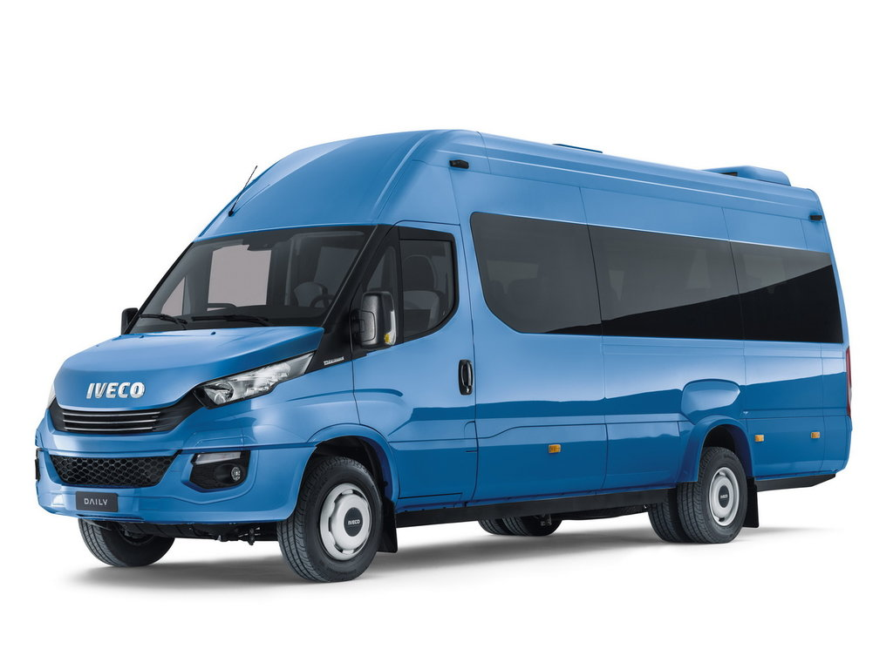
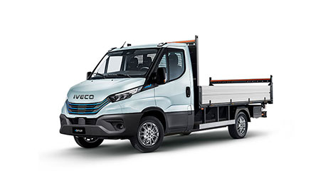
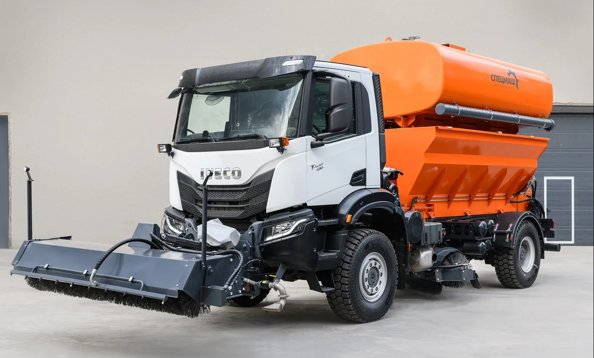

IVECO DNIPROMOTOR

"ТОВ «Дніпромотор» - офіційний дилер автомобілів IVECO в Дніпрі та Дніпропетровській області. Підприємство входить до складу групи компаній «Аеліта», яка працює на автомобільному ринку понад 25 років та офіційне дилерство має 18 всесвітньовідомих брендів автомобілів та 6 брендів мототехніки. Офіційним дилером автомобільної техніки IVECO Дніпромотор став наприкінці 2023 року. Наші спеціалісти відділу продажу пройшли профільне навчання та отримали відповідні сертифікати. Спеціалісти сервісного центру мають практичний досвід з ремонту автомобільної техніки Івеко та постійно підвищують кваліфікацію у виробника Івеко. Дніпромотор переважно спеціалізується на автомобілях Daily та пропонує широкий модельний ряд фургонів у галузі, що охоплює 8 000 заводських версій. Різні колісні, висоти даху та задніх звісів баз дає змогу перевозити різні об’єми вантажу. Насправді, Daily – це єдиний фургон у своєму класі, який здатен перевозити вантажі об’ємом від 7,3 м3 до 19,6 м3. Наша команда впровадила новий рівень відповідності індивідуальним вимогам, спрямованим на розвиток Вашого бізнесу. Ми пропонуємо Вам план обслуговування, обґрунтований реальним режимом використання Вашого автомобіля, що повністю буде відповідати потребам Вашого бізнесу.

Daily люблять за його надзвичайну універсальність: якою б не була ваша задача, в лінійці Daily ви завжди знайдете фургон, ідеальний для її виконання - від складних робіт на пересіченій місцевості до перевезення людей і вантажів.Iveco, безперечний лідер серед виробників комерційних автомобілів, розпочала рік із подвійного визнання на престижній премії Truck & Fleet Middle East Awards. На цьому щорічному заході, присвяченому визначним досягненням у сфері автомобільного транспорту в регіоні Близького Сходу, компанія Iveco блиснула, отримавши дві визначні нагороди. Зіркою вечора став Iveco Daily MY22, який завоював заповітний титул «Найкращий легкий фургон року». Ця нагорода, що присуджується групою експертів з транспортної галузі, наголошує на зростаючій популярності цього комерційного автомобіля серед власників автопарків у регіоні. Крім того, компанія Iveco була удостоєна нагороди «Запуск року» за свій вражаючий глобальний захід із запуску продукції під назвою Be The Change, що відбувся в Барселоні. Цей захід не тільки підкреслив оновлення модельного ряду Iveco, але й був відзначений за прихильність компанії до принципів сталого розвитку транспортного сектора за допомогою комплексного портфеля сервісних рішень. Маючи шість виробничих заводів, сім науково-дослідних центрів та мережу з більш ніж 3.500 пунктів продажу та обслуговування у більш ніж 160 країнах, Iveco демонструє свою прихильність до надання виняткової технічної підтримки по всьому світу. Новий Iveco Daily, удостоєний звання «Найкращий легкий фургон року», є наочним доказом постійного лідерства Iveco в автомобільній промисловості.

IVECO T-Way - це важкий вантажний автомобіль підвищеної прохідності, призначений для найскладніших умов експлуатації (кар'єри, будівельні майданчики, бездоріжжя). Він прийшов на зміну популярної моделі Iveco Trakker і позиціонується як надійний кар'єрист, здатний працювати в режимі жорстких навантажень. Вантажівки IVECO T-Way, призначені для важких умов експлуатації, знаходять в Україні нові професії. Днями підприємство ВКК «Спецмаш» представило абсолютну новинку в сегменті комунальної техніки – машину дорожню комбіновану на повнопривідному шасі 4х4. Вона може виконувати функції трьох автомобілів: поливомийного, піскосолерозкидувача та снігоприбирального. Для цього на шасі встановлено бункер для сухих реагентів або цистерна для води. Попереду автомобіля змонтовано поливомийне обладнання та одна снігоприбиральна щітка, а друга знаходиться перед задніми колесами.Шасі IVECO T-Way (4х4) розраховане на повну масу 19,5 т. На ньому застосовується посилений передній міст на 9 т, на параболічних ресорах. Задній 11-тонний міст укомплектований бортовими редукторами. На машині встановлено 12,9-літровий турбодизель Cursor 13 потужністю 430 к. с. і максимальним крутним моментом 2100 Нм. У парі з двигуном працює автоматизована 16-ступенева коробка передач ZF.

IVECO E-Way- це ідеальний автомобіль для ваших міських або регІональних перевезень з нульовим рівнем викидів та з широким вибором конфигурацІй для будь-яких застосувань. Компанія Iveco зробила черговий крок на шляху до нульових викидів, представивши нову електричну вантажівку S-eWay Artic. Ця модель розроблена спеціально для регіональних та магістральних перевезень та поєднує перевірену ефективність дизельної серії S-Way з передовими екологічними технологіями. Після торішнього дебюту модифікації S-eWay Rigid, новий Artic розширює лінійку електричних вантажівок бренду, забезпечуючи рішення для транспортних операторів, які прагнуть зменшити вуглецевий слід, не жертвуючи продуктивністю. 97% енергії — один із найвищих показників у галузі. Завдяки цьому S-eWay Artic може долати до 600 км. без підзарядки. Також слід зазначити офіційний гарантійний термін до 10 років або 1,2 млн км пробігу – рекордний показник для вантажних електромобілів.

